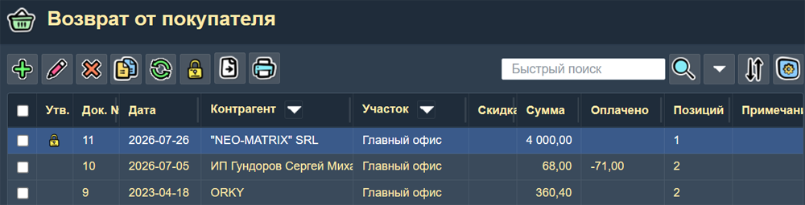
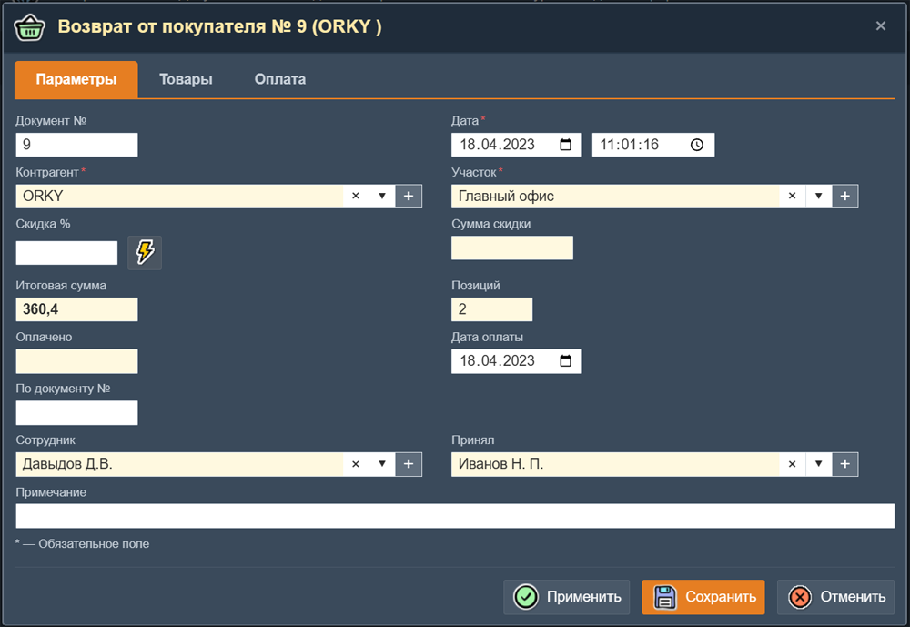
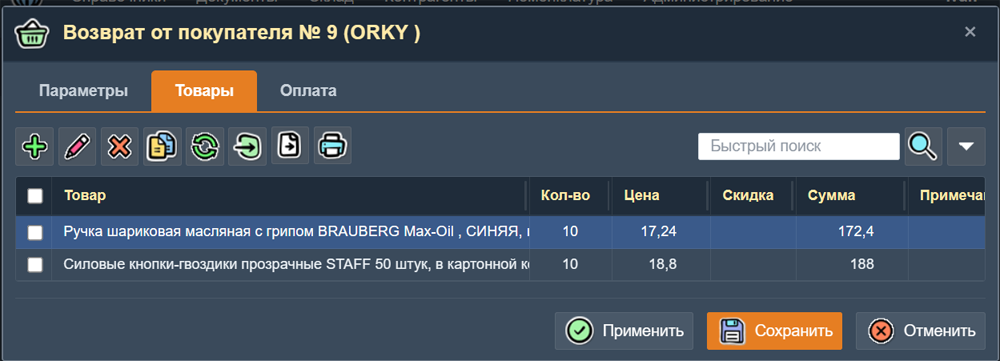

Возврат от покупателя
Документ «Возврат от покупателя» оформляет приём товаров, возвращённых покупателем. Товары возвращаются на склад и снова поступают в учёт.

Список документов возврата
Эта страница показывает все документы возврата от покупателя. В таблице отображаются колонки:
- Док. № — номер документа
- Дата — дата создания
- Контрагент — покупатель, вернувший товар
- Участок — склад, на который принимается товар
- Скидка — Процент скидки на документ в целом. Кнопка "Установить скидку" устанавливает скидку у всех товаров этого документа. При этом пересчитывается сумма скидки.
- Сумма — итоговая сумма документа
- Оплачено — сумма оплаты
- Позиций — количество товарных позиций
- Примечание — текстовое примечание к документу
Документы можно сортировать и искать по любой колонке. Имеется "колоночный фильтр" по контрагенту и участку.
 Кнопка "Утвердить". Включение признака "Утверждено" увеличивает остатки товаров на участке (складе). При этом в документе запрещаются любые изменения кроме поля "Примечание".
Кнопка "Утвердить". Включение признака "Утверждено" увеличивает остатки товаров на участке (складе). При этом в документе запрещаются любые изменения кроме поля "Примечание".
Форма документа «Возврат от покупателя»

Поля заголовка
| Поле | Описание |
|---|---|
| Док. № | Автоматически формируется системой. Можно изменить вручную. |
| Дата | Дата и время создания документа. |
| Контрагент* | Покупатель, вернувший товар. Выбирается из справочника контрагентов. |
| Участок* | Склад, на который оприходуется возвращаемый товар. |
| Скидка | Скидка на документ в процентах или сумме. |
| Итоговая сумма | Рассчитывается автоматически как сумма позиций за вычетом скидки. |
| Позиций | Количество товарных строк в документе. |
| По документу № | Ссылка на первичный документ (обычно накладная на продажу). |
| Оплачено | Факт оплаты: сумма, дата. |
| Дата оплаты | Дата фактической оплаты. |
| Сотрудник | Ответственный сотрудник, создавший документ. |
| Принял | Сотрудник, принявший товар на склад. |
| Примечание | Произвольный текст, примечание к документу. |
Вкладка «Товары» документа

Таблица товарных позиций документа «Возврат от покупателя».
На этой вкладке находится таблица списка товарных позиции документа. Для добавления записи о товаре нажмите кнопку «Добавить». В форме "Товар документа" указываются:
| Товар | Выбор товара/услуги из справочника номенклатуры. При поиске товара используется фильтр по наименованию. |
| Кол-во | Количество товара. |
| Цена | Цена за единицу товара. |
| Скидка | Скидка на данную товарную позицию в процентах. |
| Сумма | Стоимость позиции (количество x цена - скидка). Рассчитывается автоматически. |
| Сумма скидки | Сумма скидки. Рассчитывается автоматически. |
| Примечание | Комментарий к товарной позиции. |
При помощи кнопки "Импорт" в документ можно вставить список товаров, предварительно отмеченных на странице "Товары".
После добавления всех позиций сохраните документ нажатием кнопки «Применить» или «Сохранить». Они отличаются только тем что кнопка "Применить" не закрывает форму.
Вкладка «Оплата» документа
На этой вкладке находится таблица со списком платежей по этому документу. Запись об оплате имеет Вид операции расходного типа, поэтому сумма операции получается отрицательная.
Особенности
При сохранении документа количество товара на складе увеличивается — товар возвращается в оборот. Документ обычно создаётся на основании исходного документа продажи, что позволяет автоматически подставить товарные позиции, цены и контрагента.